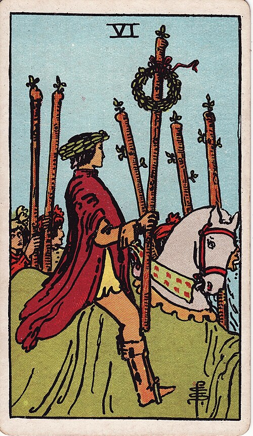

| Arcana | Minor |
| Suit | Wands |
| Element | Fire |
| Attribution | Jupiter in Leo |
Six of Wands
In shortYou win, and people notice.
Upright
This is recognition — the promotion, the acceptance, the moment your work is publicly acknowledged. It is different from private satisfaction: this card is about being seen, and it suggests accepting the credit gracefully rather than deflecting it. Good news is genuinely likely here.
Reversed
The recognition does not arrive, goes to the wrong person, or turns up and feels empty. It can also mean a success held too tightly, where pride has started to alienate the people who helped. Sometimes it simply means a private achievement that does not need an audience.
The turn
Accept the credit without qualifying it. "Thank you" is the whole sentence.
Reading with your own deck?
Sage records the cards you actually pull, writes the reading, keeps every one, and shows you what keeps returning across them. Free, private, no account.